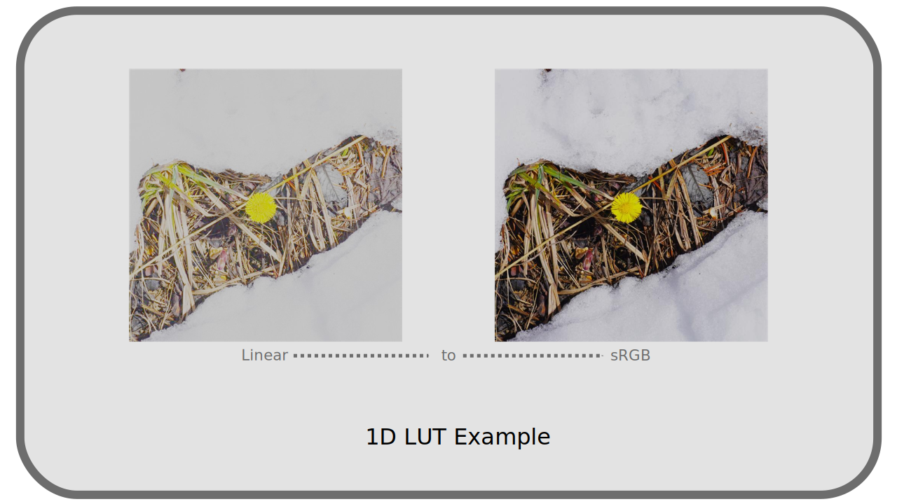

I.M - Les LUTs¶
L’acronyme anglais LUT vient de Lookup Table, Table de correspondance en français.
M.1 - Description¶
Comme son nom l’indique, c’est un simple tableau de valeurs, permettant de faire correspondre à certaines valeurs en entrée d’autres valeurs en sortie. En informatique, c’est un moyen pratique de remplacer des fonctions mathématiques complexes, résultat de calculs qui prennent du temps, par une simple recherche dans le tableau, ce qui peut grandement améliorer les performances : au lieu d’avoir à recalculer, on a déjà les résultats en mémoire.
On en garde l’usage en couleurs ; c’est un moyen simple de faire correspondre à une couleur en entrée une couleur différente en sortie : c’est donc un tableau qui permet de retoucher les couleurs ou bien convertir des espaces colorimétriques, en les décrivant, couleur par couleur.
Le principal intérêt d’une LUT est que n’importe quel programme peut facilement les utiliser et donc convertir depuis et vers des espaces colorimétriques qui ne sont pas prévus à la base par le programme ; au lieu d’avoir à “connaître” les fonctions mathématiques qui définissent un espace de couleurs (notamment la courbe de transfert), le programme n’a qu’à lire les résultats dans la table de correspondance sans avoir à en effectuer le calcul. C’est un usage utilitaire, de conversion.
Elles sont aussi un moyen de “sauvegarder” n’importe quelle retouche colorimétrique ; même si une retouche est faite en utilisant de multiples effets dans une application (niveaux, courbes, saturation…), on peut la décrire et sauvegarder comme une seule LUT et ainsi réappliquer la même retouche facilement, et dans n’importe quelle application capable de lire une LUT. Dans ce cas, c’est un usage artistique et pratique.
Voici un exemple de quelques lignes de valeurs d’une LUT, qui n’est en réalité qu’un fichier texte contenant ce genre de tableau de valeurs :
| R | G | B |
|---|---|---|
| 0 | 0 | 0 |
| 0 | 0 | 298 |
| 0 | 0 | 596 |
| 0 | 0 | 894 |
| 0 | 351 | 0 |
| 0 | 326 | 260 |
| 0 | 302 | 558 |
| 0 | 278 | 856 |
| 381 | 3784 | 0 |
| 282 | 3760 | 0 |
| 184 | 3736 | 117 |
| 85 | 3712 | 415 |
Une LUT ne décrit donc pas toutes les correspondances de couleurs possibles, mais bien une sélection de couleurs ; pour obtenir une couleur qui n’est pas dans la table, il faut donc effectuer une interpolation. Normalement, l’application utilisant la LUT propose differentes interpolations qui vont changer la manière dont ces couleurs sont obtenues (par arrondi, interpolation linéaire, etc.).
La quantité de valeurs contenues dans une LUT est donc très importante pour la qualité de l’image en sortie : n’étant qu’une table de valeurs limitées, il peut y avoir une perte lors de la conversion et le résultat peut plus ou moins différer par rapport à une vraie opération mathématique. Cela étant dit, la différence n’est pas discernable dans le cas des LUT avec beaucoup de valeurs, comme celles utilisées par OCIO + ACES pour ses conversions par exemple. Cf. Chapitre N - OCIO, ACES.
M.2 - Utilisation¶
Il existe de nombreux formats de fichiers différents pour les LUT, dépendant des applications, des développpeurs, etc. Voici quelques exemples (formats supportés par FFmpeg) :
| Extension | Nom, éditeur, application… |
|---|---|
| 3dl | Discreet / After Effects / Autodesk |
| cube | Iridas / Resolve |
| dat | DaVinci |
| m3d | Pandora |
| csp | cineSpace |
| spi1d, spi3d | Sony Pictures Imageworks |
Il peut être utile utile de convertir entre différents formats de LUT ; OCIO inclut un outil de conversion en ligne de commande, pour lequel l’encodeur de médias DuME propose une interface graphique.
Il y a deux types principaux de LUT : les LUT 1D et les LUT 3D.
- LUT 1D

Les LUT 1D ne travaillent que sur la luminance et ne modifient pas les couleurs. N’ayant qu’une dimension, elles sont plus légères et plus simples que les LUT 3D et sont utiles pour les conversions de gamma*, par exemple entre deux espaces colorimétriques qui auraient par ailleurs les mêmes primaires*. Cf. chapitre L - Courbes de transfert, espace linéaire et gamma.
- LUT 3D

Les LUT 3D travaillent sur les trois couches rouge, verte et bleue. Elles permettent donc une retouche détaillée à la fois de la luminance et des teintes autant que de la saturation. Elles permettent des effets artistiques aussi bien que des conversions depuis et vers n’importe quel espace colorimétrique.
Quel que soit le type de LUT, ces tables de conversions n’offrant qu’une simple correspondance de valeur, chaque LUT est conçue pour un espace et des couleurs précises en entrée et ne peut pas être utilisée indifféremment sur n’importe quelle image !
Par exemple, une LUT qui convertit vers l’espace colorimétrique Rec.2020 est forcément prévue pour être appliquée sur une image d’un autre espace colorimétrique précis, par exemple Rec.709 ; dans cet exemple, elle ne peut pas être utilisée sur une image sRGB, à moins de l’avoir préalablement convertie vers Rec.709.
C’est valable aussi pour les LUT à usage artistique et non pas utilitaire. Il faut savoir sur quel espace et quel type d’image chaque LUT est censée être appliquée. Suivant les applications, le choix de l’espace de travail est donc important en cas d’usage de LUT, ou en tout cas il faut en avoir conscience pour éventuellement effectuer des conversions préalables à l’usage de LUT (ce qui fait qu’elles ne sont pas si simples qu’elles en ont l’air).
Sources et références
- Table de correspondance sur Wikipedia
- 1D vs 3D LUTs by James Ritson on Affinity Spotlight (en anglais)1
-
Attention, sa conclusion comporte une erreur. Dans l’article, par ailleurs très bon, James Ritson explique qu’une LUT 1D peut être utilisée pour convertir une image de Rec.2020 à Rec.709, ce qui est faux puisque les primaires* des deux espaces sont différentes, et non pas juste la courbe de transfert*. Il faut alors utiliser une LUT 3D. Par contre la conversion de Rec.709 à sRGB est bien possible avec une LUT 1D puisque seule la courbe de transfert est différente. ↩